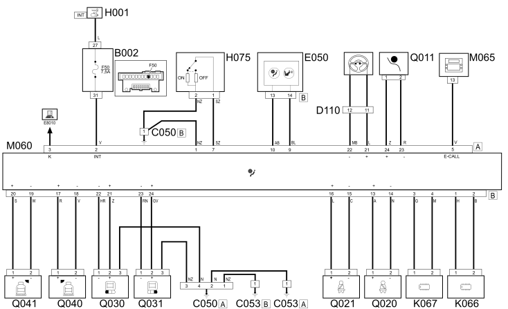

E7030 AIRBAG - Wiring diagram
- Path
- Electrical equipment > 1 ELECTRICAL FUNCTIONS > E70 VEHICLE ELECTRONIC SYSTEMS > E7030 AIRBAG > E7030 AIRBAG - Wiring diagram
- Kind
- wiring diagram
- Applies to
- all engines; all production periods
- Interactive page
- https://sloeber94.github.io/elrnDB-fPnd/en/#/2751644
Applies to: all engines; all production periods
Wiring diagram

COMPONENTS
Component code | Name | Assembly reference |
|---|---|---|
Engine compartment junction unit | ||
engine compartment junction unit | ||
Junction unit under dashboard | ||
Air Bag earth | - | |
Side Bag Head Bag earth | - | |
Side Bag + Head Bag earth | - | |
Clock spring and steering wheel controls coupling | - | |
Instrument panel | ||
Ignition switch | ||
Passenger's Air Bag disablement switch | ||
Sensor for driver's Side Bag | ||
Sensor for driver's, Side Bag | ||
Sensor for passenger Side Bag | ||
Sensor for passenger, Side Bag | ||
Body computer | ||
Air bag control unit | ||
NIT infotelematic control unit | - | |
Electric steering control unit | ||
Air Bag in dashboard (passenger side) | ||
Driver's seat belt pre-tensioner | ||
Front passenger seat belt pretensioner | ||
Driver's Side Bag | ||
Passenger Side Bag | ||
Driver's Head Bag | ||
Passenger Head Bag |
Topics linked from this page (28)
- 4110D steering electrical control system
- 5505A multi-function components
- 5505C vehicle compartment wiring
- 5520A ignition switch
- 5560B analogue control panel
- 5580C air bag system
- 7065A FRONT SEAT BELTS
- E50 ENGINE CONTROL AND MANAGEMENT SYSTEMS
- B001 JUNCTION UNIT
- B002 JUNCTION UNIT UNDER DASHBOARD
- C050 AIR BAG SYSTEM EARTH
- C053 SIDE BAG + HEAD BAG EARTH
- D110 CLOCK SPRING AND STEERING WHEEL CONTROLS COUPLING
- H001 IGNITION SWITCH
- H075 PASSENGER AIR BAG DISABLING SWITCH
- K066 SENSOR FOR DRIVER'S SIDE BAG
- K067 SENSOR FOR PASSENGER SIDE BAG
- M001 BODY COMPUTER
- M060 AIR BAG CONTROL UNIT
- M065 Info-telematic control unit (NIT)
- M086 ELECTRIC STEERING CONTROL UNIT
- Q011 AIR BAG IN DASHBOARD (PASSENGER SIDE)
- Q020 DRIVER'S SEAT BELT PRETENSIONER
- Q021 FRONT PASSENGER SEAT BELT PRETENSIONER
- Q030 DRIVER'S SIDE BAG
- Q031 PASSENGER SIDE BAG
- Q040 DRIVER'S HEAD BAG
- Q041 PASSENGER SIDE HEAD BAG